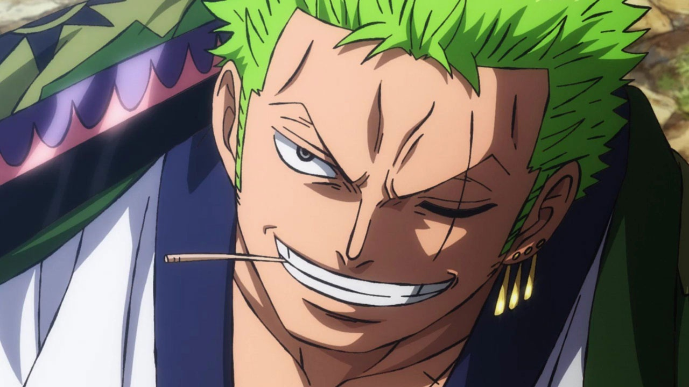
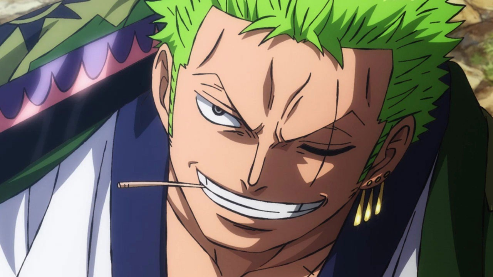
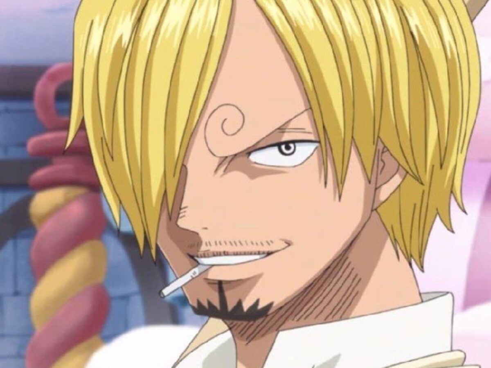
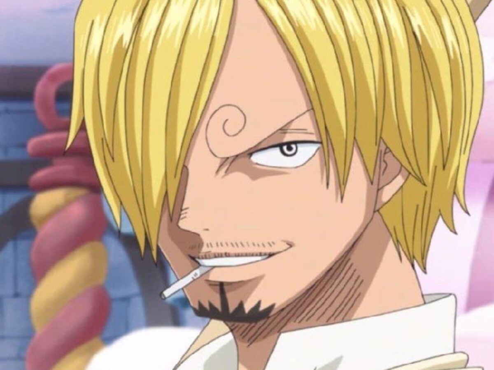
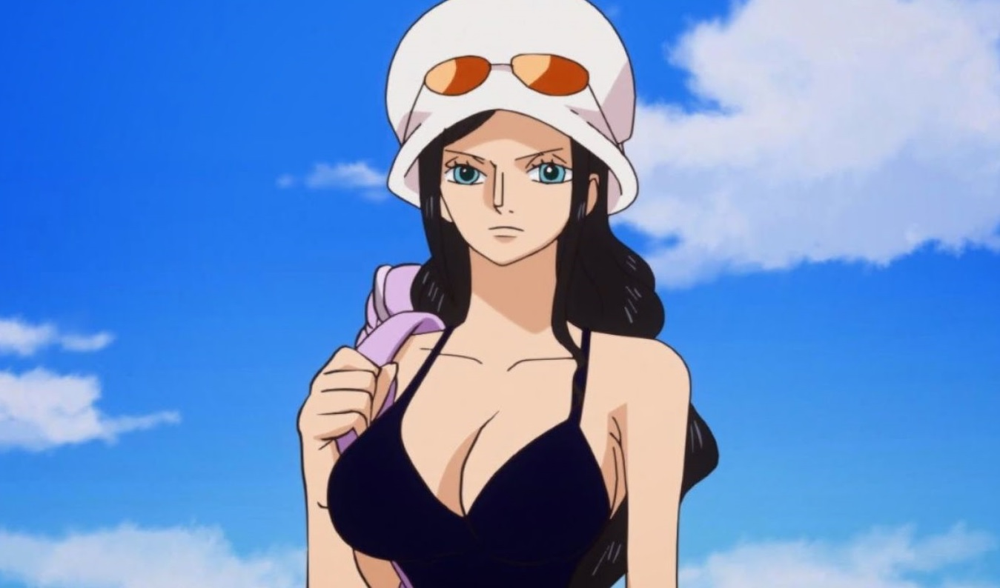
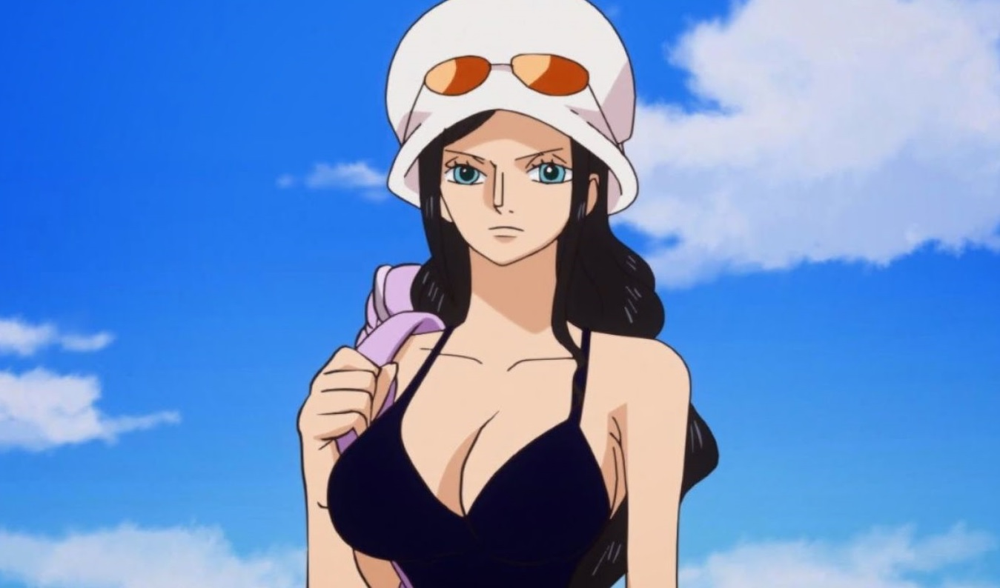
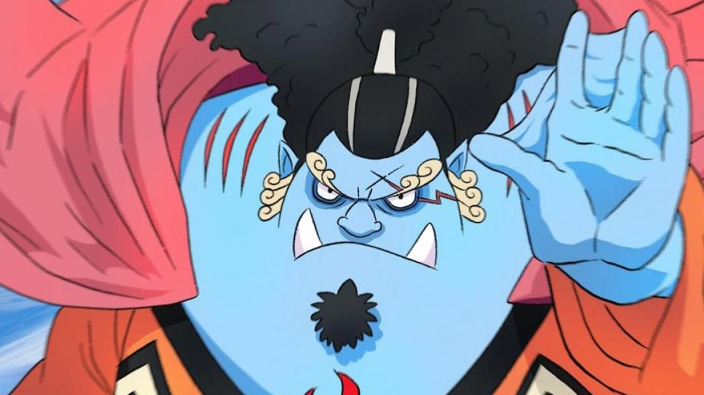
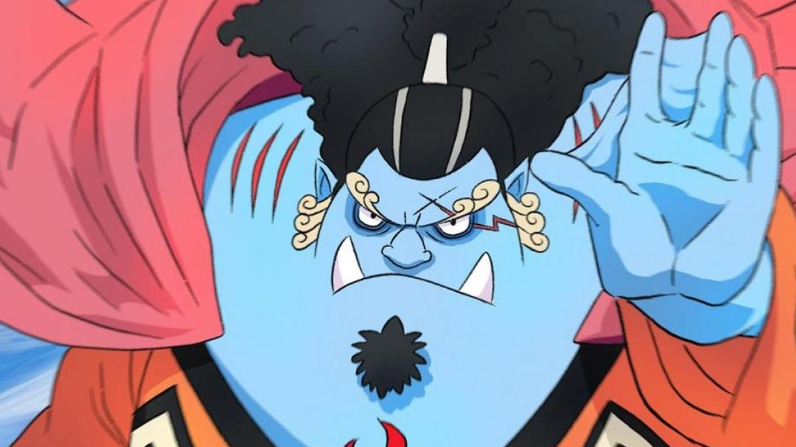

 

 

 

A história da tripulação do Luffy, personagem principal da série de mangá e anime "One Piece", começa quando ele é jovem e conhece Shanks, um famoso pirata. Luffy é inspirado por Shanks a se tornar um pirata e, anos mais tarde, parte em uma jornada para formar sua própria tripulação e encontrar o lendário tesouro conhecido como "One Piece".
Ao longo de sua jornada, Luffy conhece muitos outros personagens, alguns dos quais se juntam a sua tripulação, incluindo o espadashin, Zoro; o atirador, Usopp; a navegadora, Nami; o cozinheiro, Sanji; o médico, Chopper; a arqueóloga, Robin; o carpinteiro, Franky; e o músico, Brook. Juntos, eles enfrentam muitos desafios e enfrentam muitos inimigos, mas também fazem muitos amigos e aprendem muito uns com os outros.
A tripulação do Luffy é conhecida por ser leal e forte, e seus membros são muito unidos. Eles são dedicados a ajudar uns aos outros e a alcançar seus objetivos juntos, e a história de sua jornada é repleta de aventura, amizade e luta contra a adversidade.
One Piece é o nome que o mundo deu a todo o tesouro ganho pelo Rei dos Piratas Gol D. Roger. Pelo menos uma parte dele é um tesouro que pertenceu a Joy Boy durante o Século Perdido. Diz-se que o tesouro tem um valor inimaginável e atualmente está localizado na ilha final da Grand Line, Laugh Tale.